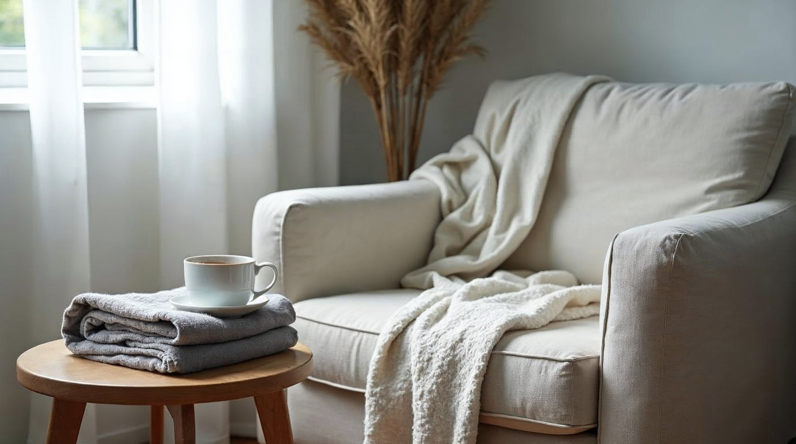
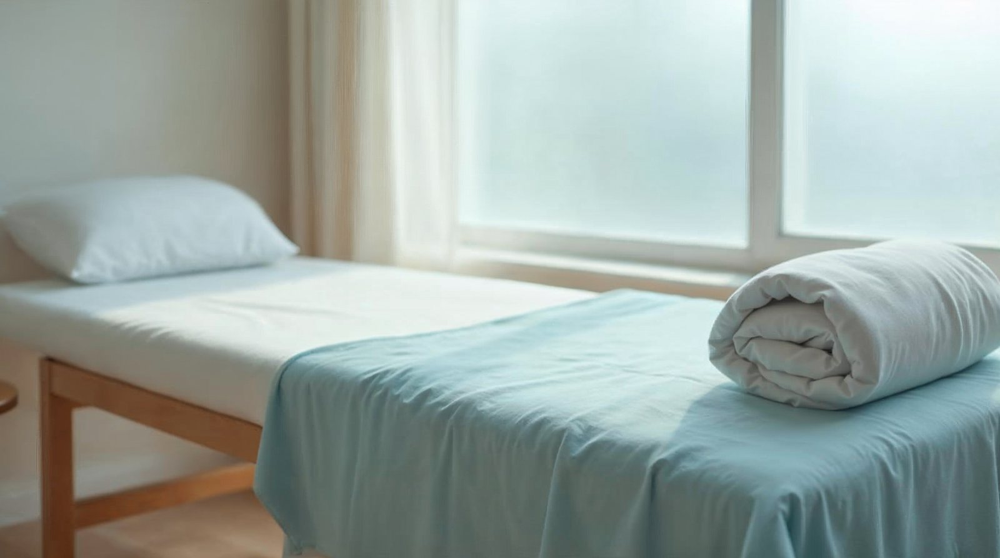
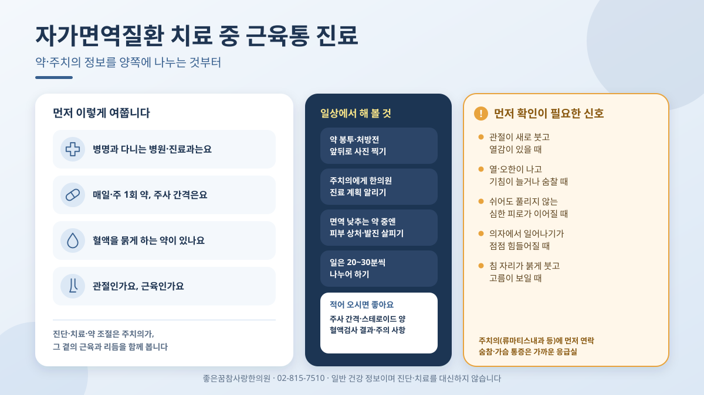

이종호 한의사 감수좋은꿈참사랑한의원 대표원장 (한의사 면허번호 19769)발행 2026-11-26 · 수정 2026-11-26
이 글의 차례
아침에 눈을 뜨면 손가락부터 살며시 쥐었다 펴 봅니다. 오늘은 컵을 쥘 만한지, 단추를 채울 만한지 가늠하는 것이 하루의 첫 일입니다. 병원 진료는 빠지지 않고 다니고, 약도 시간 맞춰 챙깁니다. 주치의 선생님은 요즘 관절이 비교적 안정적이라고 하셨습니다.
그런데 목덜미와 어깨, 허리 근육은 늘 돌덩이를 얹은 듯 무겁습니다. 퇴근길 지하철에서 손잡이를 잡고 서 있다 보면 종아리까지 당겨 옵니다. 관절은 괜찮다는데 왜 이렇게 온몸이 뻐근할까, 이건 또 누구에게 물어야 할까 싶어집니다.
진료실에서 이런 말씀을 자주 듣습니다. "류마티스 약을 먹고 있는데 침을 맞아도 되나요?" "한의원에 다닌다고 하면 병원 선생님이 싫어하실까 봐 말을 못 했어요." 문 앞까지 왔다가 망설이다 돌아간 적이 있다는 분도 계십니다.
저는 그 마음을 충분히 짐작합니다. 오랫동안 병과 함께 지내 오신 분들은 몸에 무언가 하나를 더하는 일에도 조심스러울 수밖에 없습니다. 애써 맞춰 놓은 균형이 흔들릴까 봐서요. 약 시간 맞추랴, 검사 날짜 챙기랴, 아픈 날에도 일과 살림을 버티랴, 그동안 얼마나 애쓰셨을까 싶습니다.
제 대답은 이렇습니다. 주치의 치료는 그대로 이어 가시면서, 근육통과 뻐근함, 잠과 생활 리듬을 한의원에서 함께 살피는 분들이 계십니다. 다만 그 전에 꼭 해야 할 일이 있습니다. 지금 드시는 약과 주치의에게 들은 내용은 한의원에, 한의원에서 받는 진료는 주치의에게, 양쪽으로 나누는 일입니다. 같이 받는 진료는 여기서 시작합니다.
그리고 처음부터 분명히 말씀드립니다. 자가면역질환의 진단과 치료, 약의 조절은 주치의가 맡습니다. 제가 함께 살피는 것은 그 곁에서 생기는 근육의 불편과 하루의 리듬까지입니다.
왜 약과 주치의 정보를 먼저 나누어야 할까요
자가면역질환은 몸을 지켜야 할 면역이 자기 몸의 관절이나 피부, 혈관 같은 조직을 공격하는 병을 두루 이르는 말입니다. 류마티스 관절염, 전신홍반루푸스, 강직척추염, 쇼그렌증후군, 건선관절염이 여기에 듭니다. 치료에는 지나치게 활발해진 면역을 가라앉히는 약이 자주 쓰입니다. 면역억제제, 스테로이드, 그리고 주사로 맞는 생물학적 제제 같은 약들이지요.
이 약들은 병을 잠잠하게 붙들어 두는 역할을 하기 때문에, 스스로 끊거나 줄이면 가라앉아 있던 염증이 다시 올라올 수 있습니다. 특히 스테로이드를 오래 드셨다면 갑자기 끊는 것 자체가 몸에 큰 부담이 될 수 있다고 알려져 있습니다.
그렇다면 근육통은 어디서 올까요? 한 가지로 정리되지 않습니다. 관절에 염증이 있으면 둘레 근육이 그 관절을 지키려고 긴장하고, 아픈 관절을 아끼는 자세가 오래되면 목과 어깨, 허리로 부담이 옮겨 갑니다. 피로와 얕은 잠은 같은 통증도 더 크게 느끼게 합니다. 관절 염증과는 별개로 온몸이 쑤시는 통증이 함께 있는 분도 있다고 알려져 있습니다.
스테로이드를 오래 쓰면 허벅지와 어깨 둘레 근육의 힘이 떨어지는 경우가 있고, 병에 따라서는 근육 자체에 염증이 생기기도 합니다. 겉으로는 똑같이 근육이 아프다고 느껴도 뿌리가 이렇게 다를 수 있으니, 주치의가 알고 있는 정보 없이 근육만 보고 판단하기는 어렵습니다.
약은 제가 무엇을 어떻게 할지에도 직접 영향을 줍니다. 면역을 낮추는 약을 쓰는 동안에는 몸이 세균을 막아 내는 힘이 줄어, 작은 상처에도 감염이 생기기 쉽습니다. 스테로이드는 열이나 붓기 같은 염증 신호를 덜 드러나게 하기도 해서, 감염이 생겨도 늦게 알아차릴 수 있습니다.
그래서 침을 놓을 때 피부 청결을 더 챙기고, 진료 앞뒤로 감염 신호가 없는지 함께 살핍니다.
혈액을 묽게 하는 약이나 아스피린을 드시는 분은 침 자리에 피가 나거나 멍이 들기 쉬워 침의 수와 깊이를 조절해야 하고, 진통소염제도 출혈 경향에 영향을 줄 수 있습니다. 스테로이드를 오래 쓰셨다면 뼈가 약해지고 피부가 얇아져 있을 수 있어, 세게 누르거나 비트는 손기술은 피하는 편이 안전합니다.
한약을 고려할 때는 더 그렇습니다. 메토트렉세이트처럼 정기적으로 혈액검사를 하며 간 수치와 혈구 수치를 지켜보는 약이 있습니다. 한약을 드시게 된다면 그 사실을 주치의와 한의사 양쪽이 모두 알고 있어야 합니다. 그래야 나중에 검사 수치가 달라졌을 때 무엇 때문인지 함께 따져 볼 수 있습니다. 한쪽만 알고 있으면 그 판단은 늘 반쪽이 됩니다.
이런 분들을 자주 뵙습니다
이런 분들이 많습니다. 류마티스 관절염으로 오래 치료를 받으며 관절은 안정적이라는 말을 들었는데, 사무실에서 하루 종일 앉아 일하고 나면 목과 어깨, 허리가 뻐근하다는 분입니다.
약 목록을 여쭈면 매일 드시는 약은 술술 말씀하시는데, 일주일에 한 번 드시는 약은 빠뜨리시는 경우가 꽤 있습니다. 매일 먹는 약이 아니다 보니 내가 먹는 약이라는 생각이 덜 드는 것이지요. 그래서 저는 기억에 기대지 말고 약 봉투와 처방전을 사진으로 찍어 오시라고 부탁드립니다.
스테로이드를 오랫동안 드셨던 분들도 자주 뵙습니다. 계단을 오를 때 허벅지가 묵직하고, 어깨가 결리고, 살짝 부딪혀도 멍이 잘 든다고 하십니다. 이런 분께는 골밀도 검사를 받은 적이 있는지, 결과는 어땠는지부터 여쭙고 손을 쓰는 세기를 낮춥니다.
그리고 한 가지를 꼭 당부드립니다. 의자에서 일어나기나 팔을 들어 머리 빗기가 점점 힘들어진다면 근육이 뭉친 탓으로 여기지 말고 주치의에게 먼저 알리시라고요.
몇 주 간격으로 생물학적 제제 주사를 맞는 분도 계십니다. 강직척추염으로 치료받는 젊은 분들 가운데는 아침마다 허리와 엉덩이가 뻣뻣하고 등 근육이 결린다는 말씀을 하시는 경우가 많습니다.
이런 분께는 주사 맞는 날짜와 부위를 알려 달라고 부탁드립니다. 그날 진료에서 주사 자리를 피하고, 감염 신호를 살필 때도 참고하기 위해서입니다. 아침 뻣뻣함이 몇 분 만에 풀리는지 날마다 적어 오시면 주치의 진료에서도 쓸모가 있습니다.
혈액을 묽게 하는 약을 함께 드시는 어르신들도 계십니다. 류마티스 치료를 받으면서 심장이나 혈관 문제로 약을 더 드시는 경우입니다. 이런 분께는 침을 맞기 전에 그 약을 꼭 알려 주시라고 말씀드리고, 침을 뺀 자리를 평소보다 조금 더 오래 눌러 둡니다.
예약한 날 감기 기운이 있거나 열이 나는 분도 있습니다. 면역을 낮추는 약을 쓰는 중이라면 그날은 무리해서 오시기보다 전화로 일정을 미루시고, 주치의에게 먼저 열이 난다고 알리시는 편이 맞습니다.

약과 진료 정보, 이렇게 나누어 보세요
오시기 며칠 전에는 약부터 모아 보세요. 약 봉투와 처방전을 앞뒤로 사진 찍어 두시면 됩니다. 약 이름과 용량이 보이게 찍고, 약국에서 받은 복약 안내문이 있으면 그것도 함께요.
이때 빠뜨리기 쉬운 것이 있습니다. 일주일에 한 번 먹는 약, 몇 주마다 맞는 주사, 그 약과 함께 처방받은 엽산 같은 약, 바르는 연고와 안약, 그리고 드시는 영양제와 건강기능식품입니다.
주사는 이름과 간격, 마지막으로 맞은 날을 적어 두세요. 스테로이드는 언제부터 얼마나 드셨는지, 최근에 양이 바뀌었는지, 줄여 가는 중인지도 메모해 두시면 좋습니다. 최근 혈액검사 결과지와 골밀도 검사 결과가 있으면 함께 가져오세요. 병원 앱 화면을 캡처해 오셔도 괜찮습니다.
다음 외래 때는 주치의에게 근육통 때문에 한의원 진료를 함께 받아 보려 한다고 알려 주세요. 그리고 세 가지를 여쭤 보시면 좋습니다. 지금 침이나 온열 치료를 받아도 괜찮은 시기인지, 한약을 고려한다면 특히 지켜볼 검사가 있는지, 다음 혈액검사는 언제인지.
들은 대답을 휴대폰 메모에 적어 오시면 저도 그 기준 안에서 진료를 정할 수 있습니다. 한약을 드시기로 했다면 한약 이름과 시작한 날을 적어 두었다가 다음 외래 때 주치의에게 보여 드리세요.
면역을 낮추는 약을 쓰는 동안에는 피부를 조금 더 아껴 주세요. 진료받는 날은 미리 샤워해 피부를 깨끗하게 하시고, 손톱 둘레나 발가락 사이에 작은 상처나 진물이 없는지 한번 살펴봐 주세요. 상처나 발진이 있는 자리에는 파스를 붙이지 않습니다.
침을 맞은 날 저녁과 다음 날 아침에는 침 맞은 자리를 한 번씩 보시고, 붉은 기운이 번지거나 뜨겁게 붓거나 고름이 보이면 바로 알려 주세요.
생활에서는 무리한 날과 쉬는 날이 들쭉날쭉하지 않게 하는 것이 먼저입니다. 몸이 가벼운 날 밀린 집안일을 한꺼번에 해 버리면 다음 이틀을 앓게 되는 경우가 많습니다. 일은 20~30분씩 나누고 사이사이 잠깐 앉아 쉬어 보세요.
아침에 뻣뻣하다면 따뜻한 물로 10분쯤 손과 몸을 데운 뒤 아프지 않은 범위에서 천천히 움직입니다. 걷기는 몸이 허락하는 날 10~20분부터 시작하고, 관절이 붓는 날은 쉽니다. 일어나는 시각을 일정하게 지키는 것도 잠을 덜 흔들리게 하는 데 도움이 됩니다.
오시기 전에 스스로 한번 점검해 보세요. 지금 드시는 약을 이름과 간격까지 빠짐없이 말할 수 있으신가요? 주치의는 한의원 진료를 함께 받으려는 것을 알고 있나요? 최근 혈액검사 결과를 받아 두셨나요? 혈액을 묽게 하는 약을 드시는지 알고 계신가요? 오늘 아픈 곳이 붓고 열나는 관절인지, 관절 둘레의 뻐근한 근육인지 나누어 말할 수 있으신가요?
대답이 막히는 질문이 있어도 괜찮습니다. 그 질문이 오시기 전에 챙길 목록이 됩니다.
얼마나 지켜보고, 언제 진료를 받을까요
바쁜 하루를 보낸 뒤 근육이 뻐근한 정도라면, 이삼일은 일을 나누어 하고 따뜻하게 쉬면서 흐름을 지켜보셔도 됩니다. 아침마다 근육통 점수(0~10)와 아침 뻣뻣함이 풀리는 데 걸린 시간을 적어 두세요. 관절이 붓지 않는데 같은 근육통이 1~2주 넘게 이어진다면, 다음 외래 때 주치의에게 알리고 한의원 상담도 받아 보시길 권합니다.
근육통과 달리 아래와 같은 변화는 병의 흐름이나 약과 관련될 수 있어 다르게 보셔야 합니다. 이런 경우에는 다음 예약일까지 기다리지 말고 주치의(류마티스내과 등)에 먼저 연락해 진료를 앞당길 수 있는지 여쭈세요.
- 아침 뻣뻣함이 평소보다 눈에 띄게 길어진 경우
- 쉬어도 풀리지 않는 심한 피로가 이어지거나, 이유 없이 체중이 줄고 밤에 땀이 흠뻑 나는 경우
- 몸 한쪽에 띠 모양으로 물집이 올라오는 경우
- 한약을 드시는 중 눈 흰자위나 피부가 노래지고 소변 색이 짙어지는 경우(다음 복용 전에 한의원과 주치의에게 바로 알려 주세요)
이런 증상은 먼저 확인이 필요합니다
- 열이 나거나 오한이 드는 경우
- 관절이 새로 붓고 열감이 있거나, 붓는 관절이 늘어나는 경우
이런 신호가 있으면 한의원보다 가까운 병원이나 응급실을 먼저 찾으세요.

좋은꿈참사랑한의원에 처음 오시면
처음 오시면 저는 병명과 진단받은 때, 다니시는 병원과 진료과, 주치의에게 들은 요즘 상태부터 여쭙니다. 그리고 가져오신 약 봉투 사진을 한 장씩 같이 넘겨 봅니다.
매일 드시는 약과 일주일에 한 번 드시는 약, 주사 간격과 마지막으로 맞은 날, 스테로이드 양이 바뀐 시기, 혈액을 묽게 하는 약이 있는지를 확인합니다. 최근 혈액검사에서 주치의가 지켜보자고 한 수치가 있었는지, 감염으로 고생한 일은 없었는지, 골밀도 검사를 받으셨는지도 여쭙습니다.
그다음 양손을 올려 봐 달라고 말씀드립니다. 맥을 짚으며 잠은 어떤지, 피로가 하루 중 언제 몰려오는지, 식사와 소화, 대소변은 편한지, 몸이 찬 편인지 함께 여쭙고, 필요하면 혀도 봅니다.
이어서 아프다고 하신 곳을 손으로 짚어 관절인지 관절 둘레 근육인지 나누어 보고, 관절이 붓거나 따뜻하지 않은지 확인합니다. 새로 붓고 열감이 있다면 그날은 진료를 서두르지 않고 주치의 연락을 먼저 권합니다.
필요하다고 판단되면 초음파로 아픈 자리 둘레의 근육과 힘줄을 살펴보기도 합니다. 다만 관절 속 염증을 판단하고 약을 조절하는 일은 주치의의 몫입니다.
그 뒤 몸 상태와 드시는 약에 맞춰 침이나 온열 치료 같은 방법을 신중하게 고릅니다. 면역을 낮추는 약을 쓰는 분은 피부를 꼼꼼히 소독하고 상처나 발진이 있는 자리를 피합니다. 혈액을 묽게 하는 약을 드시는 분은 침의 수와 깊이를 조절하고 뺀 자리를 조금 더 오래 눌러 둡니다.
열감이 있는 관절에는 온열 치료를 하지 않고, 피부가 얇아진 분은 온열의 세기를 낮춥니다. 한약은 복용 약과 최근 혈액검사, 주치의 의견을 확인한 뒤 필요하다고 판단될 때 상의하며, 시작하게 되면 한약 이름과 시작한 날을 주치의에게도 알려 주시도록 부탁드립니다.
진료를 마치면 집에서 이어 갈 움직임과 쉬는 방법을 함께 정합니다. 다시 오시면 지난번에 적어 두신 근육통 점수와 잠이 어떻게 달라졌는지부터 함께 봅니다. 담당 원장이 바뀌는 날에도 이전 기록을 함께 보고 이어 갑니다.
오실 때는 약 봉투와 처방전 사진, 주사 간격 메모, 최근 혈액검사 결과지, 주치의에게 들은 주의 사항, 근육통 부위와 점수를 챙겨 오시면 이야기가 훨씬 빨라집니다. 빈칸이 있어도 괜찮습니다. 그 빈칸은 같이 채워 가면 됩니다. 보험 적용 여부는 방문 전 전화(02-815-7510)로 확인해 주세요.
마치며
오래 치료를 받아 오신 분께 한의원은 또 하나의 짐처럼 느껴질 수도 있습니다. 챙길 약이 하나 늘고, 설명할 이야기가 하나 늘어나니까요. 그래도 약 봉투 사진 몇 장과 주치의에게 들은 한두 마디만 있으면, 처음 만난 자리에서도 이야기를 꽤 깊이 나눌 수 있습니다.
주치의는 병을 지켜보고, 저는 그 곁에서 근육과 잠과 하루의 리듬을 함께 봅니다. 두 곳이 서로의 일을 알고 있을 때 환자분도 마음 놓고 말씀하실 수 있습니다.
다음에 오시면 지난번 이후 주치의 진료에서 어떤 이야기를 들으셨는지, 약이 바뀐 것은 없는지부터 여쭙겠습니다.
함께 읽으면 좋은 글
- 한의원 가기 전에 복용 약 목록은 어떻게 정리하면 좋나요?
- 한약을 먹는 동안 양약과 음식은 어떻게 알려 주면 되나요?
- 침 치료를 처음 받기 전에 무엇을 알려 주면 되나요?
- 다른 병원에서 받은 검사 결과는 한의원에 어떻게 가져가면 되나요?

먼저 확인이 필요한 신호
- 열이 나거나 오한이 드는 경우
- 관절이 새로 붓고 열감이 있거나, 붓는 관절이 늘어나는 경우
왜 약과 주치의 정보를 먼저 나누어야 할까요
- 자가면역질환은 몸을 지켜야 할 면역이 자기 몸의 관절이나 피부, 혈관 같은 조직을…
- 류마티스 관절염, 전신홍반루푸스, 강직척추염, 쇼그렌증후군, 건선관절염이 여기에 듭…
이런 분들을 자주 뵙습니다
- 이런 분들이 많습니다.
- 류마티스 관절염으로 오래 치료를 받으며 관절은 안정적이라는 말을 들었는데, 사무실에…
약과 진료 정보, 이렇게 나누어 보세요
- 오시기 며칠 전에는 약부터 모아 보세요.
- 약 봉투와 처방전을 앞뒤로 사진 찍어 두시면 됩니다.
자주 묻는 질문
류마티스 약을 먹고 있어도 침을 맞을 수 있나요?
드시는 약과 지금 관절 상태를 확인한 뒤 정합니다. 면역을 낮추는 약을 쓰는 중이라면 피부 청결과 감염 신호를 함께 살피고, 혈액을 묽게 하는 약이나 아스피린을 드신다면 침을 맞기 전에 꼭 알려 주세요.
한의원 진료를 받는 동안 류마티스 약을 줄여도 되나요?
주치의가 처방한 면역억제제, 스테로이드, 생물학적 제제는 스스로 줄이거나 끊지 않습니다. 약을 조절하고 싶은 마음이 드신다면 주치의와 먼저 상의하세요.
한약을 함께 먹어도 되나요?
복용 약과 최근 혈액검사 결과, 주치의 의견을 확인한 뒤 필요하다고 판단될 때 상의합니다. 한약을 고려하신다면 주치의와 한의사 양쪽에 알려 주세요.
관절이 붓는 날에도 한의원에 가도 되나요?
관절이 새로 붓고 열감이 있거나 열이 함께 난다면 주치의(류마티스내과 등)에 먼저 연락하세요. 한의원 예약은 그 뒤로 미루셔도 괜찮습니다.
한의원에서 자가면역질환 자체를 치료하나요?
자가면역질환의 진단과 치료, 약 조절은 주치의가 맡습니다. 한의원에서는 그 곁에서 생기는 근육통과 뻐근함, 잠과 생활 리듬을 함께 살핍니다.
좋은꿈참사랑한의원은 재진 때 지난번 이야기부터 이어서 여쭙니다. 진료시간과 예약은 오시는 길에서 확인하세요.
어디서 상담받을 수 있나요?
좋은꿈참사랑한의원은 서울 동작구 만양로2길 2 신성빌딩 3층·5층(서울 동작구 상도동, 7호선 상도역 3번 출구 근처)에 있습니다. 한의사 3명(이종호 대표원장, 조영기 수석진료원장, 정원영 진료원장)이 진료합니다. 진료시간은 평일 09:30~20:00(점심 13:00~14:00), 토·일·공휴일 09:30~15:00이며, 방문 전 전화로 확인을 권합니다. 예약은 네이버 예약, 카카오톡 상담, 전화 02-815-7510로 받습니다.
이 글은 일반적인 건강 정보이며 개인의 진단이나 치료를 대신하지 않습니다. 증상이 있거나 복용 중인 약이 있다면 진료를 통해 확인하세요. 치료 효과는 개인마다 다를 수 있습니다.
작성 기준: 일반적으로 알려져 있는 건강 정보를 참고해 정리했습니다(대표원장 감수). 증상 기록은 1~2주 동안 하루 1회, 비슷한 시간에 적어 오시면 지난 상태와 비교하기 쉽습니다.